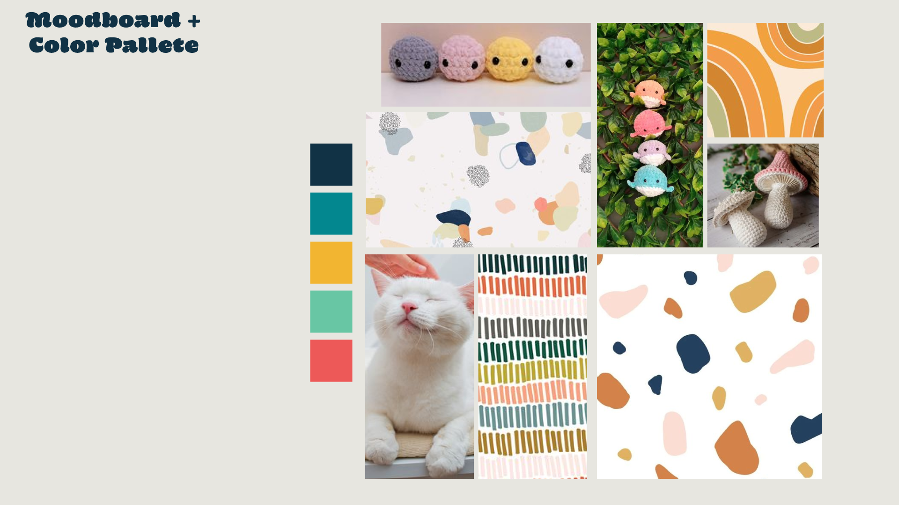
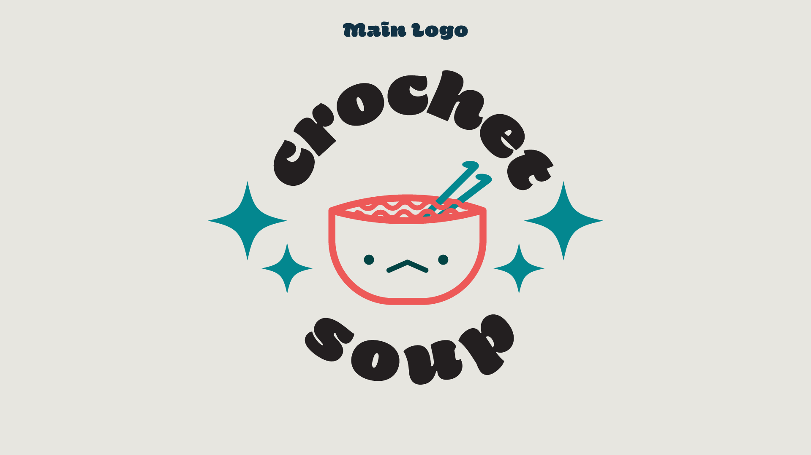
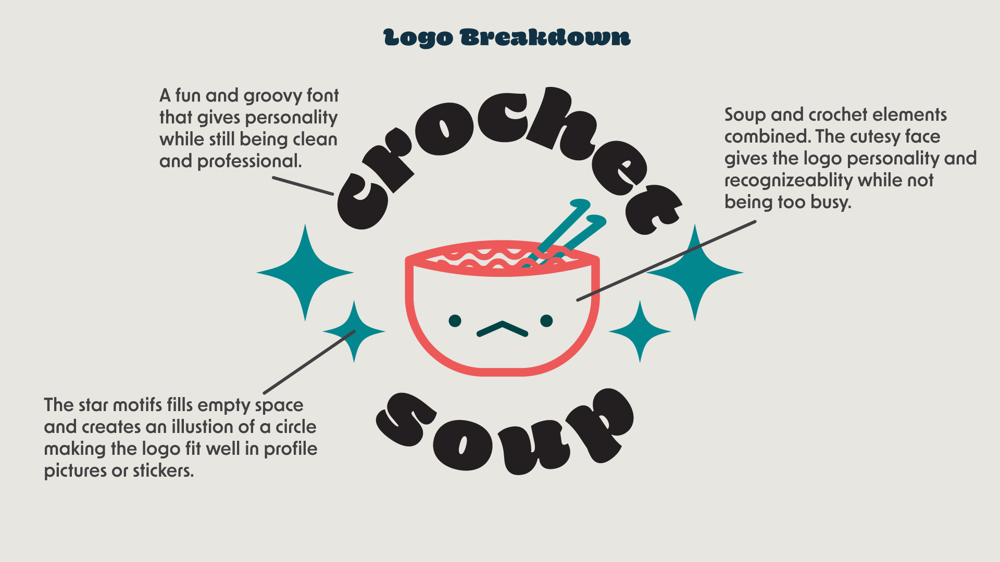
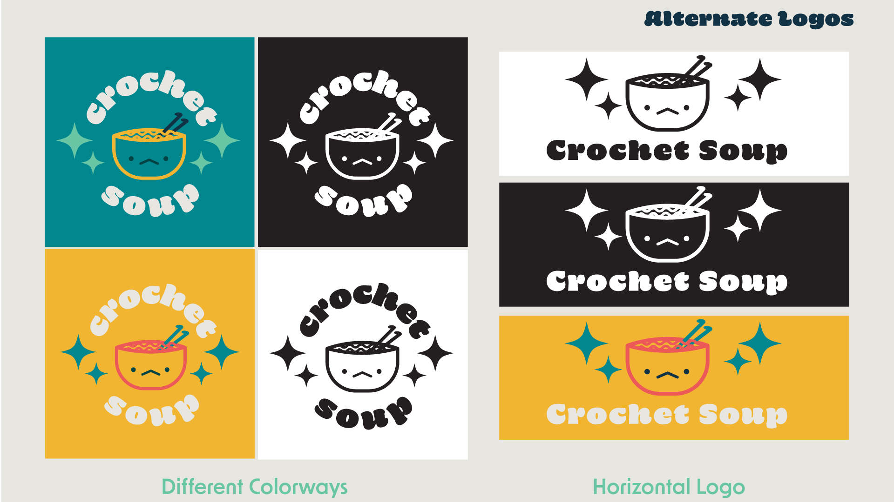
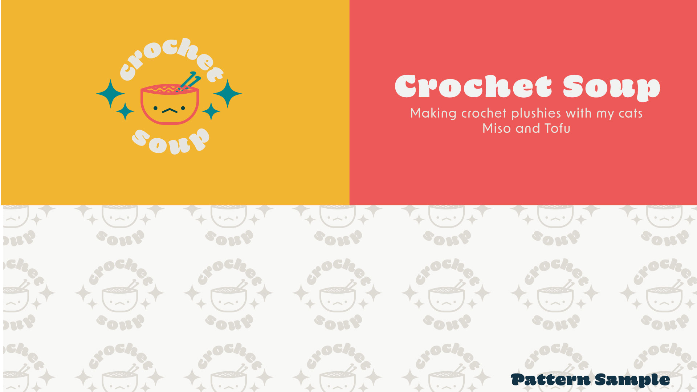
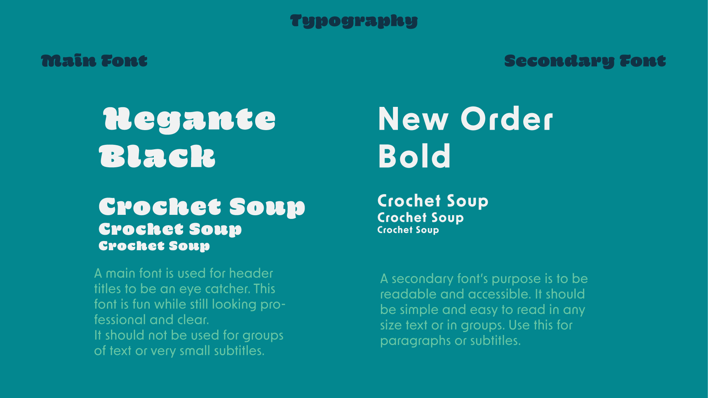
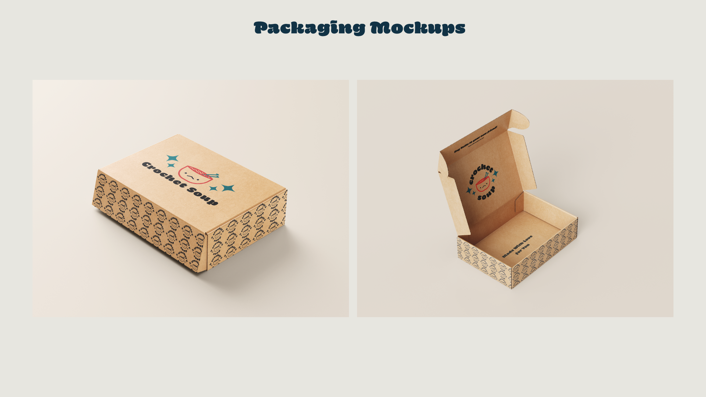
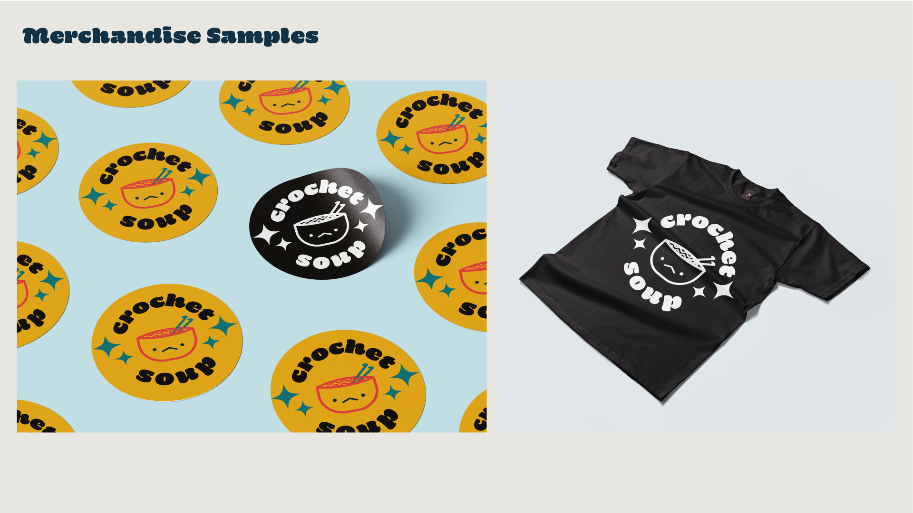

Crochet Soup is a small crochet business that creates plushes and accessories. The client wanted her two cats to be a part of the brand identity, her cat's names are tofu and miso which is why she wanted her main concept to be soup. They commissioned me to help define their aesthetic and marketing style. I worked with the owner of crochet soup to find a brand identity using typography and a personalized logo design. I also consulted with them on how to use a brand identity to best market their business on instagram and similar platforms.
To begin I asked the client to help creating a mood board so I can understand their vision and desired direction
After discussing the expectations I begin drafting logos till I find a strong brand identity that the client enjoys.
After discussing the initial ideas I drafted a logo and presented it to the client, explaining the significance and the details of the logo.
I also showed several different colorways and formats for the logo for the client to choose from and use in different platforms
I created a simple layout to show all the elements together along with the color scheme and a pattern to use for packaging.
I also showed the client how to use typography to keep her brand coherent throughout her social media presence.
to conclude I created some mockups for the client to see how the branding can be implemented in different forms.
  .
.